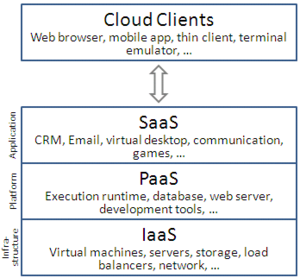

Service Models :
Though service-oriented architecture advocates "everything as a service" (with the acronyms EaaS or XaaS,[57] or simply aas), cloud-computing providers offer their "services" according to different models, of which the three standard models per NIST are Infrastructure as a Service (IaaS), Platform as a Service (PaaS), and Software as a Service (SaaS).[56] These models offer increasing abstraction; they are thus often portrayed as a layers in a stack: infrastructure-, platform- and software-as-a-service, but these need not be related. For example, one can provide SaaS implemented on physical machines (bare metal), without using underlying PaaS or IaaS layers, and conversely one can run a program on IaaS and access it directly, without wrapping it as SaaS.

Infrastructure as a service (IaaS)
"Infrastructure as a service" (IaaS) refers to online services that provide high-level APIs used to dereference various low-level details of underlying network infrastructure like physical computing resources, location, data partitioning, scaling, security, backup etc. A hypervisor, such as Xen, Oracle VirtualBox, Oracle VM, KVM, VMware ESX/ESXi, or Hyper-V, LXD, runs the virtual machines as guests. Pools of hypervisors within the cloud operational system can support large numbers of virtual machines and the ability to scale services up and down according to customers' varying requirements. Linux containers run in isolated partitions of a single Linux kernel running directly on the physical hardware. Linux cgroups and namespaces are the underlying Linux kernel technologies used to isolate, secure and manage the containers. Containerisation offers higher performance than virtualization, because there is no hypervisor overhead. Also, container capacity auto-scales dynamically with computing load, which eliminates the problem of over-provisioning and enables usage-based billing.[58] IaaS clouds often offer additional resources such as a virtual-machine disk-image library, raw block storage, file or object storage, firewalls, load balancers, IP addresses, virtual local area networks (VLANs), and software bundles
The NIST's definition of cloud computing describes IaaS as "where the consumer is able to deploy and run arbitrary software, which can include operating systems and applications. The consumer does not manage or control the underlying cloud infrastructure but has control over operating systems, storage, and deployed applications; and possibly limited control of select networking components (e.g., host firewalls)
Read More...